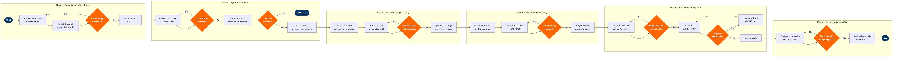

| Step | L4 Step Name | KPI / Target | Pain Point / Risk | Gate |
|---|---|---|---|---|
| 1.1 | Define commission tier structure by agency segment | Commission cost as % of total distribution revenue ≤3.5% | Legacy GDS commission structures limit dynamic per-segment tier adjustments; IATA Resolution 818 constrains net-rate transparency, reducing ability to differentiate incentive rates by booking window or route | |
| 1.2 | Model financial impact of proposed commission rates | Commission ROI ≥4:1 incremental revenue per dollar paid | Incomplete NDC booking attribution in data lake distorts channel profitability calculations — NDC and GDS bookings not tagged consistently in Redshift, leading to underestimation of NDC cost savings | ⚠ |
| 1.3 | File commission schedules in ATPCO CAT 35 | Filing cycle completed ≤2 business days from policy approval; zero GDS distribution failures | ATPCO CAT 35 supports net fares rather than explicit commission rates, requiring workaround constructions that reduce transparency for agency partners and complicate audits under IATA Resolution 850 | |
| 2.1 | Validate IATA/ARC accreditation for new agency | Onboarding validation completed within 3 business days of request submission | IATA accreditation lapses and bond failures are not automatically propagated to GDS agency profiles — risk of continuing commission payments to deaccredited agencies discovered only at BSP settlement | ⚠ |
| 2.2 | Configure commission parameters in GDS platforms | Configuration accuracy 100%; zero commission miscalculation incidents per quarter across all three GDS platforms | Managing parallel commission configurations across Sabre, Travelport, and Amadeus requires manual triple-entry with no centralised commission API — errors typically discovered only at monthly BSP/ARC settlement, creating retroactive adjustment workload | |
| 2.3 | Enroll agency in NDC incentive programme | NDC share of enrolled agency bookings ≥15% within 90 days of enrolment | Many TMCs and leisure agencies lack technical capability for full NDC API integration; incentive uptake is constrained by agency IT readiness rather than demand, reducing the effectiveness of shift-to-NDC distribution strategy | ⚠ |
| 3.1 | Extract historical agency performance data | Data extraction latency ≤4 hours for full 24-month dataset; completeness ≥99% of expected agency records | GDS MIDT data arrives with 24–48hr delay and does not distinguish flown versus unflown bookings at ingestion — performance scorecards overstate agency contribution until cancellation netting is applied in a separate downstream process | |
| 3.2 | Set incentive thresholds and tier boundaries | Target incentive budget utilisation ≥85% by end of programme period; zero over-budget accruals | Revenue Management incentive budget inputs are static annual figures — no dynamic recalculation when O&D demand shifts mid-year, causing misalignment between incentive thresholds and actual revenue opportunity by quarter | |
| 3.3 | Approve override rates for strategic partner accounts | Override approval cycle ≤5 business days of proposal submission; 100% of overrides documented with ROI justification | Override approvals require VP-level sign-off but historically tracked in email threads with no structured workflow — creates audit exposure under IATA Resolution 850 and SOX internal controls for airline revenue contracts | ⚠ |
| 4.1 | Ingest daily booking volumes from GDS and NDC | MIDT ingestion completeness ≥98% of expected records per day; ingestion pipeline latency ≤6 hours | MIDT data does not distinguish flown versus unflown bookings at time of ingestion — commission accruals include no-show and subsequently cancelled bookings that must net out at BSP settlement, creating transient overstatement of liability | |
| 4.2 | Calculate commission accruals against tier thresholds | Accrual calculation cycle completed within 2 hours of MIDT ingestion; accrual variance to final settlement ≤1% | SAP accrual entries require manual journal adjustment when an agency crosses a tier boundary mid-month — automated tier-crossing triggers not yet configured, exposing the process to under-accrual risk and period-end restatements | ⚠ |
| 4.3 | Flag agencies approaching performance thresholds | ≥90% of threshold-proximity alerts actioned within 48 hours; conversion rate of nudged agencies reaching next tier ≥35% | No automated CRM integration between Tableau alerts and account management workflows — alerts require manual transfer, causing follow-up delays that reduce the effectiveness of incentive tier nudging as a revenue acceleration tactic | |
| 5.1 | Generate commission billing statement via BSP/ARC | BSP/ARC billing statement issued within 5 business days of month-end close; billing accuracy vs accruals within ±2% tolerance | BSP remittance data format (IATA Resolution 850) does not map directly to SAP GL coding — manual field-by-field rekeying required, creating a 2–3 day reconciliation lag and introducing transcription error risk at scale | ⚠ |
| 5.2 | Post commission payables to SAP AP | AP posting completed within 2 business days of billing statement validation; on-time payment rate ≥98% | Multi-currency commission payments (USD, EUR, GBP) require FX conversion at time of AP posting — exchange rate movement between accrual date and payment date creates untracked P&L exposure not captured in current distribution cost reporting | |
| 5.3 | Process and resolve agency dispute claims | Dispute resolution cycle ≤15 business days; dispute rate ≤2% of total monthly invoices by value | IATA BSP dispute window is 12 months — historical disputes can surface against already-closed SAP accounting periods, requiring prior-period adjustment journals that breach internal month-end close policies and trigger external audit queries | ⚠ |
| 6.1 | Analyse commission ROI by channel and agency segment | Incremental revenue per £1 commission paid ≥4:1; NDC cost-per-booking ≤60% of equivalent GDS cost | NDC and GDS bookings are not comparable on a per-booking-cost basis without blended modelling spanning GDS segment fees, NDC API development costs, and commission payments — data lives across Redshift, SAP FI, and GDS billing portals with no single unified view | |
| 6.2 | Revise commission tier structure for next programme cycle | Policy revision cycle completed ≤30 days before new programme period start; zero ATPCO filing errors on submission | ATPCO filing lead time for commission changes is 7–14 days — late budget approvals from Finance regularly compress the filing window, risking programme launch delays that disrupt agency booking behaviour during high-demand booking periods | ⚠ |